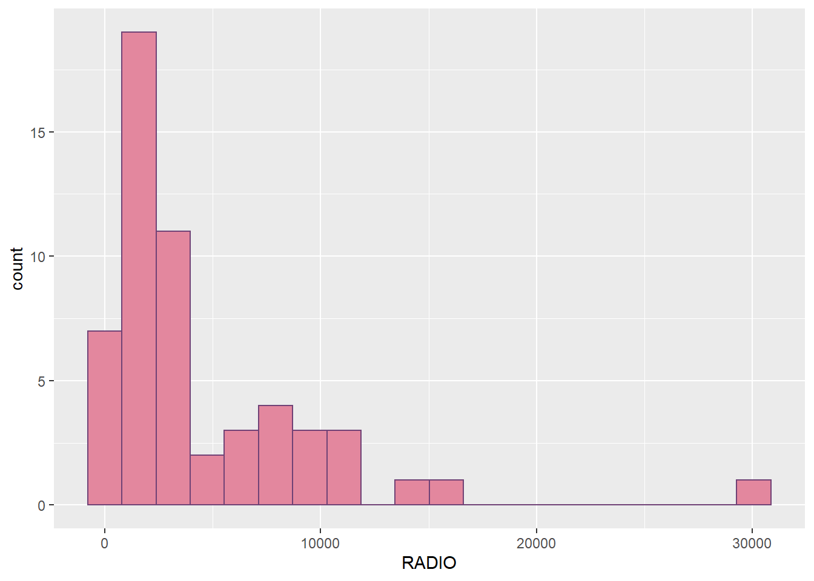
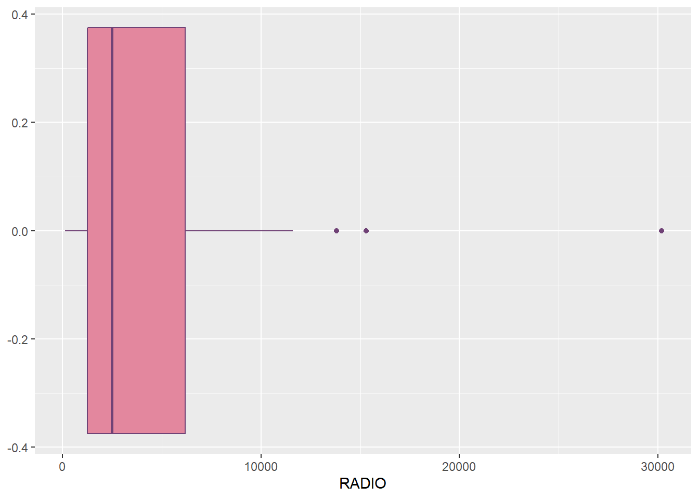
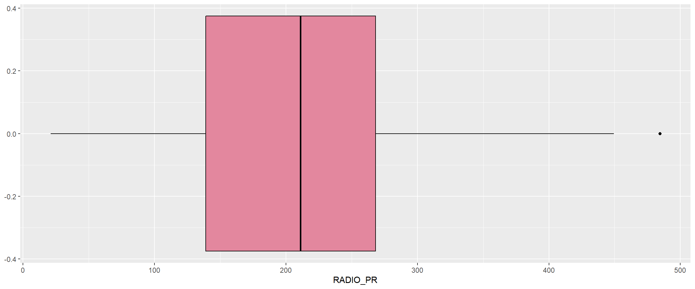

Press to toggle code
pacman::p_load(rgdal, spdep, tmap, sf, ggpubr, cluster, factoextra, NbClust, heatmaply, corrplot, psych, tidyverse)This is a hands-on exercise based on Chapter 5 of R for Geospatial Data Science and Analytics by Dr. Kam Tin Seong and is a requirement under the class ISS624: Geospatial Analytics and Applications.
The objective of this hands-on exercise is to learn how to delineate homogeneous regions using geographically referenced multivariate data. There are two major analysis, namely:
spatially constrained cluster analysis.
By the end of this hands-on exercise, you will able:
to convert GIS polygon data into R’s simple feature data.frame by using appropriate functions of sf package of R;
to convert simple feature data.frame into R’s SpatialPolygonDataFrame object by using appropriate sf of package of R;
to perform custer analysis by using hclust() of Base R;
to perform spatially constrained cluster analysis using skater() of Base R; and
to visualise the analysis output by using ggplot2 and tmap package.
In geobusiness and spatial policy, it is a common practice to delineate the market or planning area into homogeneous regions by using multivariate data. In this hands-on exercise, we are interested to delineate Shan State, Myanmar into homogeneous regions by using multiple Information and Communication technology (ICT) measures, namely: Radio, Television, Land line phone, Mobile phone, Computer, and Internet at home.
Myanmar Township Boundary Data (i.e. myanmar_township_boundaries) : This is a GIS data in ESRI shapefile format. It consists of township boundary information of Myanmar. The spatial data are captured in polygon features. Under GIS Resources > MIMU Geospatial Data.
Shan-ICT.csv: This is an extract of The 2014 Myanmar Population and Housing Census Myanmar at the township level.
Both data sets are download from Myanmar Information Management Unit (MIMU)
The code chunk below installs and loads the different required packages for this exercise using p_load():
pacman::p_load(rgdal, spdep, tmap, sf, ggpubr, cluster, factoextra, NbClust, heatmaply, corrplot, psych, tidyverse)The code chunk below uses st_read() to import the shapefile containing the administrative boundaries of Myanmar.
shan_sf <- st_read(dsn = "data/geospatial", layer = "myanmar_township_boundaries") %>% filter(ST %in% c("Shan (East)", "Shan (North)", "Shan (South)"))Reading layer `myanmar_township_boundaries' from data source
`C:\acapgalano\ISSS624\Hands-on_Ex\Hands-on_Ex3\data\geospatial'
using driver `ESRI Shapefile'
Simple feature collection with 330 features and 14 fields
Geometry type: MULTIPOLYGON
Dimension: XY
Bounding box: xmin: 92.17275 ymin: 9.671252 xmax: 101.1699 ymax: 28.54554
Geodetic CRS: WGS 84WHAT DOES THE OPERATOR %in% DO?
So in the context of the code chunk above, the records are filtered to only extract those with 'ST' equals to either “Shan (East)”, “Shan (North)”, “Shan (South)”.
In the context of our data, 'ST' refers to the state, region or union territory, which are the first level administrative boundaries of Myanmar. We are focusing on the “Shan” state of Myanmar.
shan_sfSimple feature collection with 55 features and 14 fields
Geometry type: MULTIPOLYGON
Dimension: XY
Bounding box: xmin: 96.15107 ymin: 19.29932 xmax: 101.1699 ymax: 24.15907
Geodetic CRS: WGS 84
First 10 features:
OBJECTID ST ST_PCODE DT DT_PCODE TS TS_PCODE
1 163 Shan (North) MMR015 Mongmit MMR015D008 Mongmit MMR015017
2 203 Shan (South) MMR014 Taunggyi MMR014D001 Pindaya MMR014006
3 240 Shan (South) MMR014 Taunggyi MMR014D001 Ywangan MMR014007
4 106 Shan (South) MMR014 Taunggyi MMR014D001 Pinlaung MMR014009
5 72 Shan (North) MMR015 Mongmit MMR015D008 Mabein MMR015018
6 40 Shan (South) MMR014 Taunggyi MMR014D001 Kalaw MMR014005
7 194 Shan (South) MMR014 Taunggyi MMR014D001 Pekon MMR014010
8 159 Shan (South) MMR014 Taunggyi MMR014D001 Lawksawk MMR014008
9 61 Shan (North) MMR015 Kyaukme MMR015D003 Nawnghkio MMR015013
10 124 Shan (North) MMR015 Kyaukme MMR015D003 Kyaukme MMR015012
ST_2 LABEL2 SELF_ADMIN ST_RG T_NAME_WIN T_NAME_M3
1 Shan State (North) Mongmit\n61072 <NA> State rdk;rdwf မိုးမိတ်
2 Shan State (South) Pindaya\n77769 Danu State yif;w, ပင်းတယ
3 Shan State (South) Ywangan\n76933 Danu State &GmiH ရွာငံ
4 Shan State (South) Pinlaung\n162537 Pa-O State yifavmif; ပင်လောင်း
5 Shan State (North) Mabein\n35718 <NA> State rbdrf; မဘိမ်း
6 Shan State (South) Kalaw\n163138 <NA> State uavm ကလော
7 Shan State (South) Pekon\n94226 <NA> State z,fcHk ဖယ်ခုံ
8 Shan State (South) Lawksawk <NA> State &yfapmuf ရပ်စောက်
9 Shan State (North) Nawnghkio\n128357 <NA> State aemifcsdK နောင်ချို
10 Shan State (North) Kyaukme\n172874 <NA> State ausmufrJ ကျောက်မဲ
AREA geometry
1 2703.611 MULTIPOLYGON (((96.96001 23...
2 629.025 MULTIPOLYGON (((96.7731 21....
3 2984.377 MULTIPOLYGON (((96.78483 21...
4 3396.963 MULTIPOLYGON (((96.49518 20...
5 5034.413 MULTIPOLYGON (((96.66306 24...
6 1456.624 MULTIPOLYGON (((96.49518 20...
7 2073.513 MULTIPOLYGON (((97.14738 19...
8 5145.659 MULTIPOLYGON (((96.94981 22...
9 3271.537 MULTIPOLYGON (((96.75648 22...
10 3920.869 MULTIPOLYGON (((96.95498 22...unique(shan_sf$TS) [1] "Mongmit" "Pindaya" "Ywangan" "Pinlaung" "Mabein"
[6] "Kalaw" "Pekon" "Lawksawk" "Nawnghkio" "Kyaukme"
[11] "Muse" "Laihka" "Mongnai" "Mawkmai" "Kutkai"
[16] "Mongton" "Mongyai" "Mongkaing" "Lashio" "Mongpan"
[21] "Matman" "Tachileik" "Narphan" "Mongkhet" "Hsipaw"
[26] "Monghsat" "Mongmao" "Nansang" "Laukkaing" "Pangsang"
[31] "Namtu" "Monghpyak" "Konkyan" "Mongping" "Hopong"
[36] "Nyaungshwe" "Hsihseng" "Mongla" "Hseni" "Kunlong"
[41] "Hopang" "Namhkan" "Kengtung" "Langkho" "Monghsu"
[46] "Taunggyi" "Pangwaun" "Kyethi" "Loilen" "Manton"
[51] "Mongyang" "Kunhing" "Mongyawng" "Tangyan" "Namhsan" As shown above we have 55 features, and each feature represents a township in Myanmar since the 'TS' variable is unique for all records. The terms “feature”, “polygon”, and “township” will be used interchangeably in this exercise.
The code chunk below uses read_csv to import
ict <- read_csv("data/aspatial/Shan-ICT.csv")summary(ict) District Pcode District Name Township Pcode Township Name
Length:55 Length:55 Length:55 Length:55
Class :character Class :character Class :character Class :character
Mode :character Mode :character Mode :character Mode :character
Total households Radio Television Land line phone
Min. : 3318 Min. : 115 Min. : 728 Min. : 20.0
1st Qu.: 8711 1st Qu.: 1260 1st Qu.: 3744 1st Qu.: 266.5
Median :13685 Median : 2497 Median : 6117 Median : 695.0
Mean :18369 Mean : 4487 Mean :10183 Mean : 929.9
3rd Qu.:23471 3rd Qu.: 6192 3rd Qu.:13906 3rd Qu.:1082.5
Max. :82604 Max. :30176 Max. :62388 Max. :6736.0
Mobile phone Computer Internet at home
Min. : 150 Min. : 20.0 Min. : 8.0
1st Qu.: 2037 1st Qu.: 121.0 1st Qu.: 88.0
Median : 3559 Median : 244.0 Median : 316.0
Mean : 6470 Mean : 575.5 Mean : 760.2
3rd Qu.: 7177 3rd Qu.: 507.0 3rd Qu.: 630.5
Max. :48461 Max. :6705.0 Max. :9746.0 The summary above confirms that there are 55 townships.
dplyr packageict_derived <- ict %>% mutate(`RADIO_PR` = `Radio`/`Total households`*1000) %>%
mutate(`TV_PR` = `Television`/`Total households`*1000) %>%
mutate(`LLPHONE_PR` = `Land line phone`/`Total households`*1000) %>%
mutate(`MPHONE_PR` = `Mobile phone`/`Total households`*1000) %>%
mutate(`COMPUTER_PR` = `Computer`/`Total households`*1000) %>%
mutate(`INTERNET_PR` = `Internet at home`/`Total households`*1000)ict_derived <- ict_derived %>%
rename(`DT_PCODE` =`District Pcode`,
`DT`=`District Name`,
`TS_PCODE`=`Township Pcode`,
`TS`=`Township Name`,
`TT_HOUSEHOLDS`=`Total households`,
`RADIO`=`Radio`,
`TV`=`Television`,
`LLPHONE`=`Land line phone`,
`MPHONE`=`Mobile phone`,
`COMPUTER`=`Computer`,
`INTERNET`=`Internet at home`) summary(ict_derived) DT_PCODE DT TS_PCODE TS
Length:55 Length:55 Length:55 Length:55
Class :character Class :character Class :character Class :character
Mode :character Mode :character Mode :character Mode :character
TT_HOUSEHOLDS RADIO TV LLPHONE
Min. : 3318 Min. : 115 Min. : 728 Min. : 20.0
1st Qu.: 8711 1st Qu.: 1260 1st Qu.: 3744 1st Qu.: 266.5
Median :13685 Median : 2497 Median : 6117 Median : 695.0
Mean :18369 Mean : 4487 Mean :10183 Mean : 929.9
3rd Qu.:23471 3rd Qu.: 6192 3rd Qu.:13906 3rd Qu.:1082.5
Max. :82604 Max. :30176 Max. :62388 Max. :6736.0
MPHONE COMPUTER INTERNET RADIO_PR
Min. : 150 Min. : 20.0 Min. : 8.0 Min. : 21.05
1st Qu.: 2037 1st Qu.: 121.0 1st Qu.: 88.0 1st Qu.:138.95
Median : 3559 Median : 244.0 Median : 316.0 Median :210.95
Mean : 6470 Mean : 575.5 Mean : 760.2 Mean :215.68
3rd Qu.: 7177 3rd Qu.: 507.0 3rd Qu.: 630.5 3rd Qu.:268.07
Max. :48461 Max. :6705.0 Max. :9746.0 Max. :484.52
TV_PR LLPHONE_PR MPHONE_PR COMPUTER_PR
Min. :116.0 Min. : 2.78 Min. : 36.42 Min. : 3.278
1st Qu.:450.2 1st Qu.: 22.84 1st Qu.:190.14 1st Qu.:11.832
Median :517.2 Median : 37.59 Median :305.27 Median :18.970
Mean :509.5 Mean : 51.09 Mean :314.05 Mean :24.393
3rd Qu.:606.4 3rd Qu.: 69.72 3rd Qu.:428.43 3rd Qu.:29.897
Max. :842.5 Max. :181.49 Max. :735.43 Max. :92.402
INTERNET_PR
Min. : 1.041
1st Qu.: 8.617
Median : 22.829
Mean : 30.644
3rd Qu.: 41.281
Max. :117.985 The new variables we created two code chunks ago ('RADIO_PR', 'TV_PR', 'LLPHONE_PR', 'MPHONE_PR', 'COMPUTER_PR', and 'INTERNET_PR') are now in our new dataframe ‘ict_derived’.
'RADIO' Distributionggplot(data=ict_derived,
aes(x=`RADIO`)) +
geom_histogram(bins=20,
color="#704276",
fill="#e3879e")
ggplot(data=ict_derived,
aes(x=`RADIO`)) +
geom_boxplot(color="#704276",
fill="#e3879e")
'RADIO_PR' Distributionggplot(data=ict_derived,
aes(x=`RADIO_PR`)) +
geom_histogram(bins=20,
color="#704276",
fill="#e3879e")
ggplot(data=ict_derived,
aes(x=`RADIO_PR`)) +
geom_boxplot(color="#704276",
fill="#e3879e")